Detected shoulders measure 1.087× the worn reference. Largest measured joint offset 41 px.
Each colorway combines the registered front of its Ideogram render with the scarf, hands and garment edges of the retouched portrait.
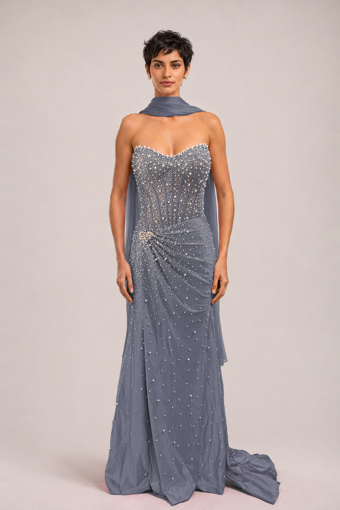
periwinkle blue
#6B667C · Retouched Ideogram fabric
Rack ΔE76 4.36 · Detail correlation 0.972
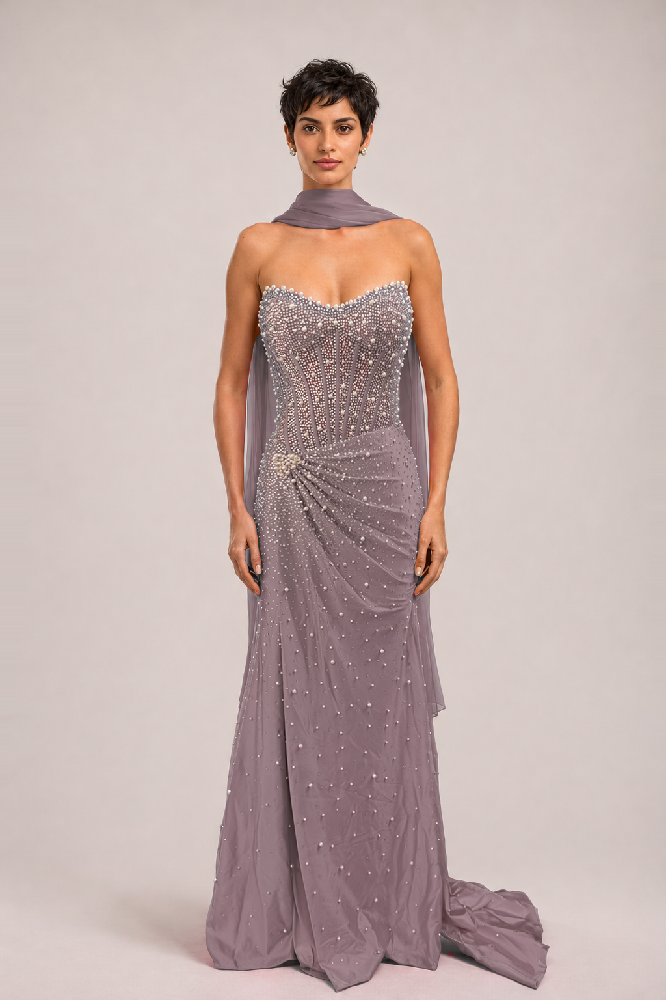
lavender
#977380 · Retouched Ideogram fabric
Rack ΔE76 5.39 · Detail correlation 0.981
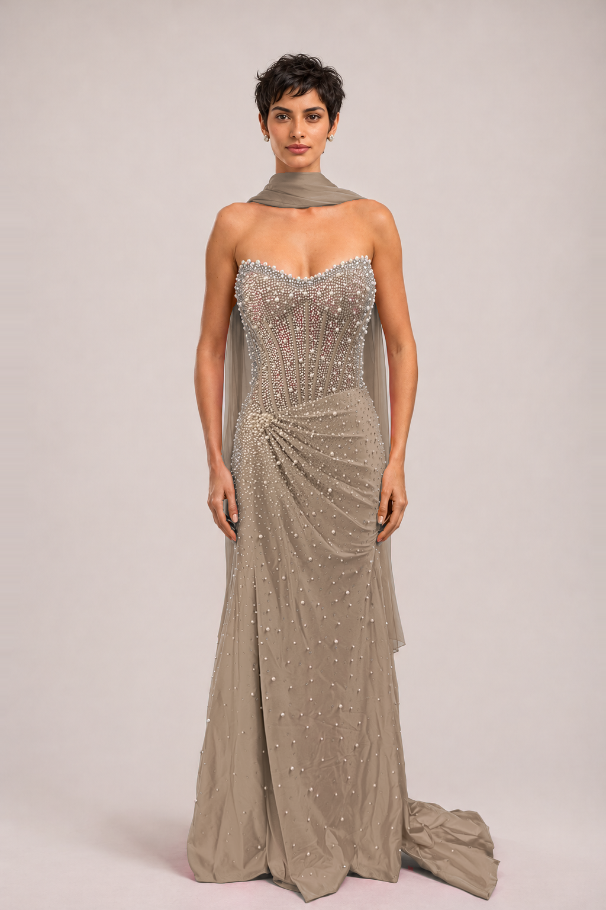
taupe
#AB8E7B · Retouched Ideogram fabric
Rack ΔE76 4.52 · Detail correlation 0.981
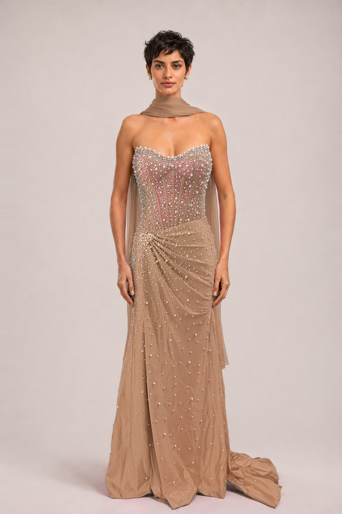
champagne peach
#AF7C64 · Retouched Ideogram fabric
Rack ΔE76 3.1 · Detail correlation 0.981
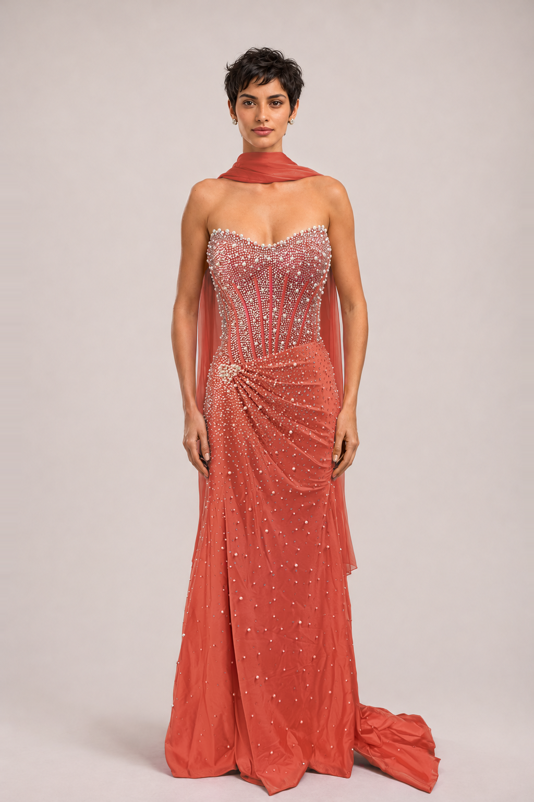
coral red
#D1433F · Retouched Ideogram fabric
Rack ΔE76 7.17 · Detail correlation 0.977
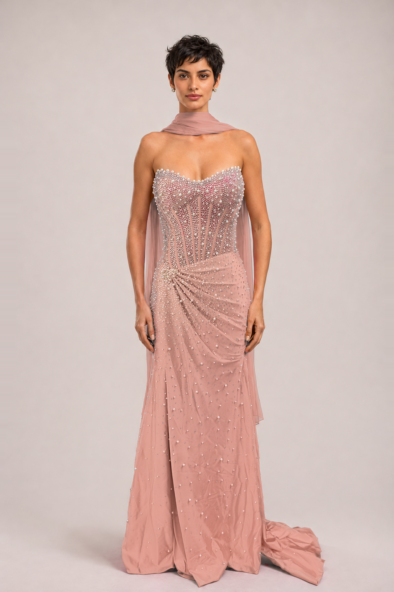
rose pink
#E9958E · Retouched Ideogram fabric
Rack ΔE76 8.93 · Detail correlation 0.945
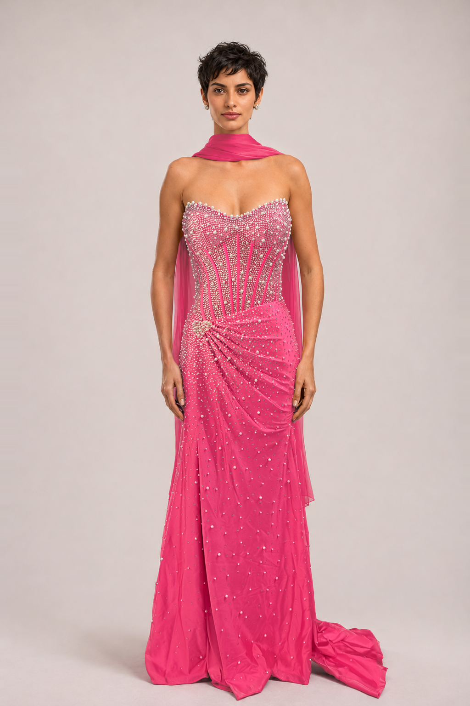
fuchsia
#E43969 · Retouched Ideogram fabric
Rack ΔE76 0.53 · Detail correlation 0.982
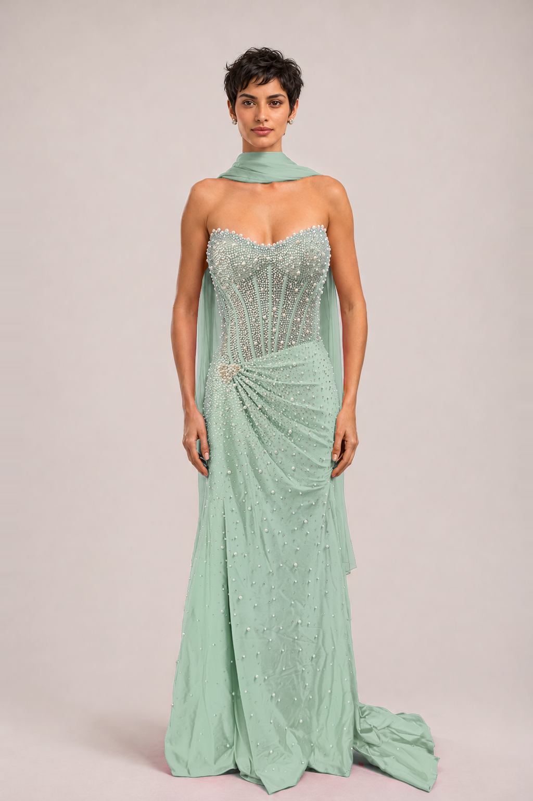
pale seafoam
#B6C3BE · Retouched Ideogram fabric
Rack ΔE76 8.63 · Detail correlation 0.903
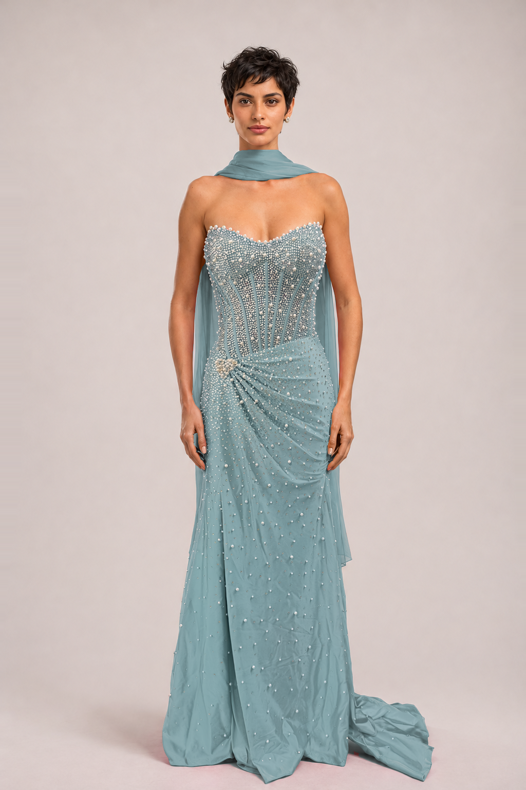
powder blue
#94A1AD · Retouched Ideogram fabric
Rack ΔE76 7.79 · Detail correlation 0.967
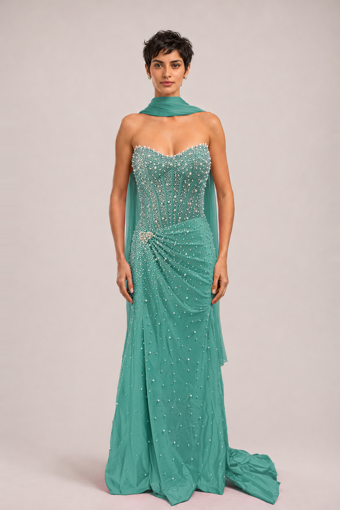
mint green
#43988C · Retouched Ideogram fabric
Rack ΔE76 3.33 · Detail correlation 0.977
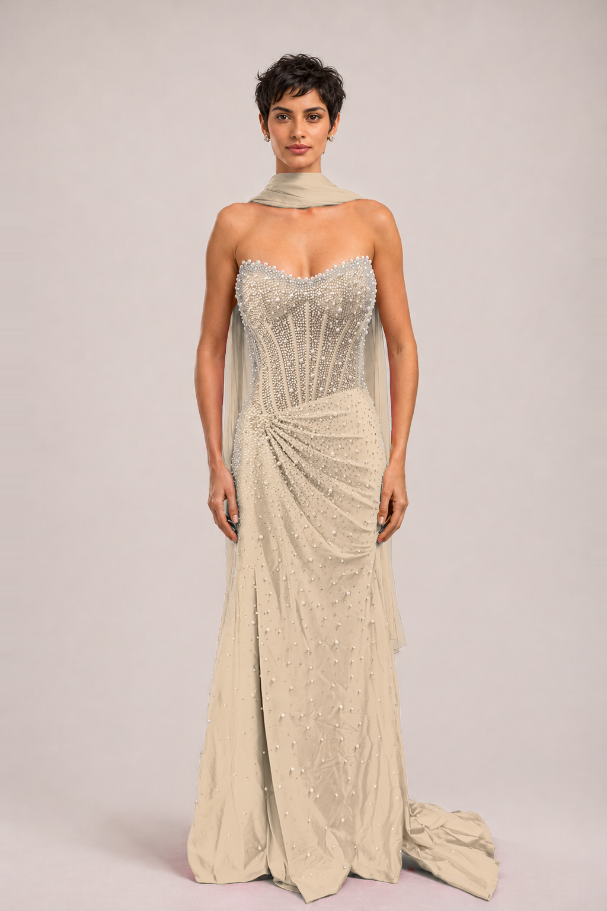
ivory
#DFC4AC · Retouched Ideogram fabric
Rack ΔE76 1.72 · Detail correlation 0.861
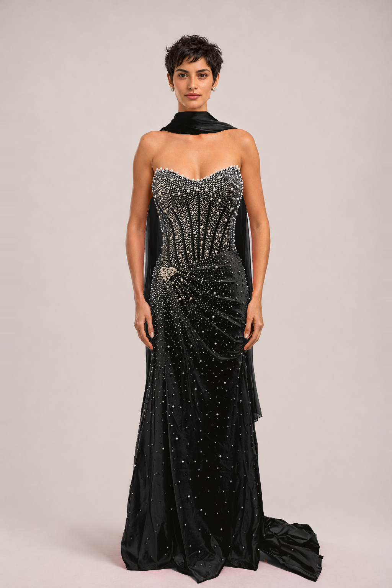
black
#171210 · Retouched Ideogram fabric
Rack ΔE76 1.52 · Detail correlation 0.912